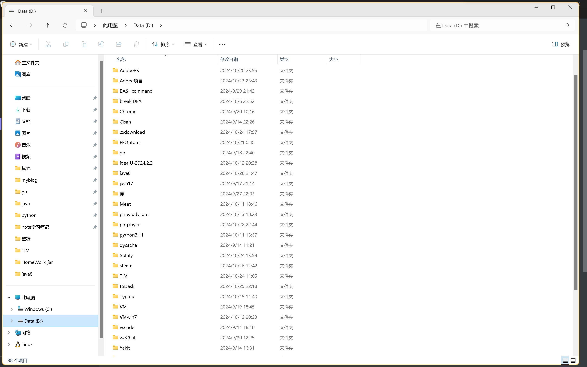
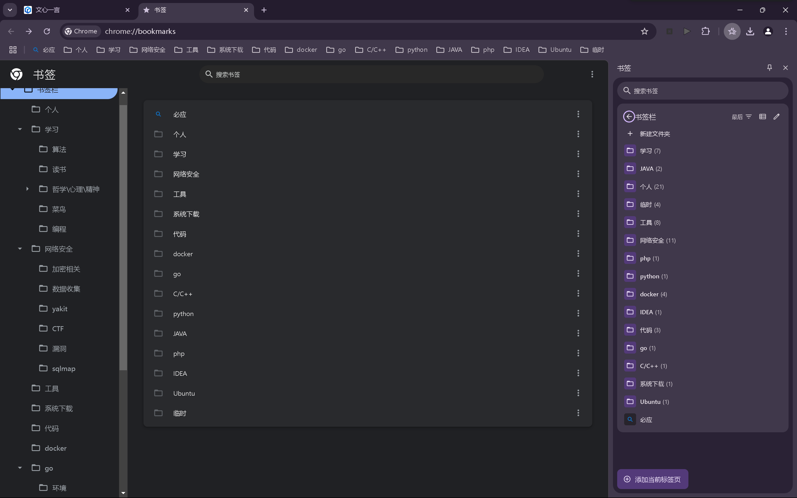
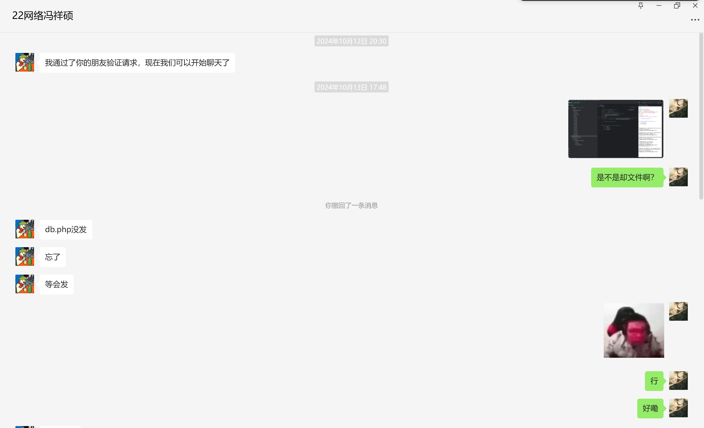
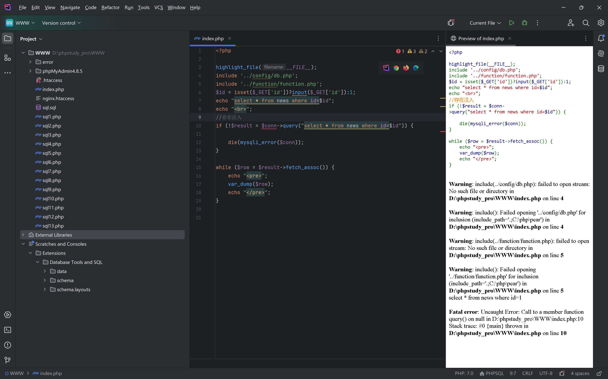
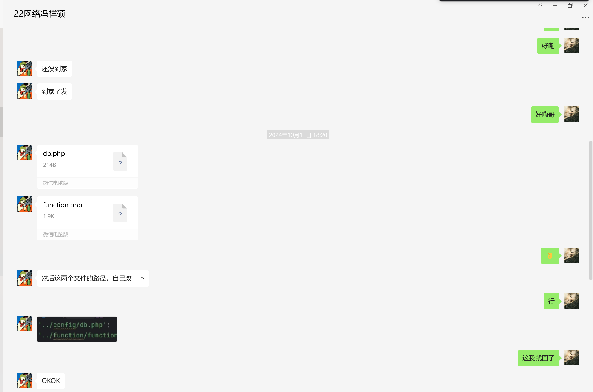
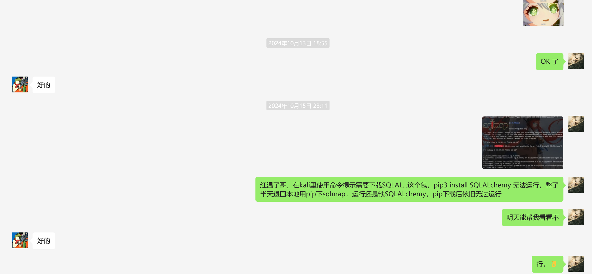
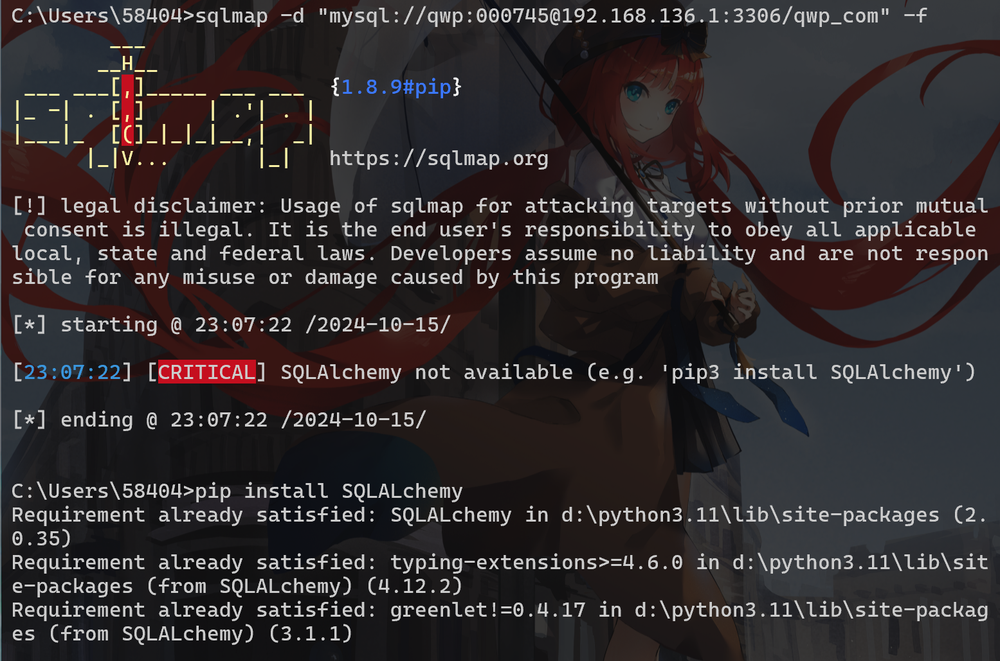

提问的艺术
前言
首先，我先叠个甲，本帖只针对那些舔着脸过来问问题然后一句话不回，好话也不会说，跟个大爷似的“人”。（在社区问答，互联网逛多了这种人比比皆是）但是，就针对于新人同学，第一次接触这个行业的“萌新”来说，也是十分愿意来作为“仙贝”给各位答疑解惑。那么我就继续，关于安装JAVA、及其配置环境问题、IDEA集成开发环境使用问题为素材，来为各位详细讲解“以我的视角理解，如何高效问问题，并解决问题”。（考虑到各位可能不喜欢看长篇大论的内容，我也写了每部分的总结，旨在为各位能理解并实际应用）
首先，我们将问问题模块化。在问问题开始前，先分析问题，将问题的具体原因和后果影响在脑子里形成一个大致的描述思路；然后尝试自行解决；当发现问题不在自己的理解和能力范围内时，借助互联网工具，进行知识拓扑，对自己处理问题能力的补充；当真正处理不了问题时，采用 描述 + 图解 + n 的模式，向身边的人进行描述。那么这就是以我的视角，高效提出并解决问题的方法。
下面是分模块详细介绍：
1.问题构思
当遇到问题时，首先要进行问题剖析，大致明白问题的来源、导致原因，对问题进行一步步排查，了解产生的影响。之后，在脑子里进行复现问题形成的过程，明白其成因之后，进行问题描述，这个描述并非要准确的，而是明白成因的问题描述，它可以不准确，但你必须理解（当你无法理解时，就需要跳到借助互联网或其它工具），这样，你的问题就能更清晰明了的被他人所知，在叙述过程中不至于令被提问者“红温”。
- 发现问题
- 剖析问题
- 明白问题
- 描述问题
2.自行解决
自己能解决的问题往往被称为“在能力范围内”，当然我也很想分享有关于“为什么明明在自己能力范围内，却出现失误，或者疏忽”，但这并不是我这篇帖子要说的内容，也不会在此模块大谈特谈，因为面向的群体是入坑的“萌新”，他们往往没有过多的在此领域的经验，所以可以这么说，到目前为止还没有自己解决问题的能力，所以这个模块算是写给同行的“大佬”。
当真正能处理遇到的问题时，我们首先要考虑的是，问题出在哪里。这里，我为什么说的不是先构思问题，而是直接去找问题处理？要回答这个问题时，且听我说：你会发现一个领域的老手，他们往往与刚入坑的人不同，他们清晰的知道，或者大致了解这一领域，对于某个现象早已司空见惯，甚至摸索出一个门道，以至于能形成所谓的处理问题的“条件反射”。举一个十分明显的例子，一个学过计算机的人会合理分配自己的磁盘、文件存储及其应用分类排布（除了某个只有一个C盘的大佬，我猜应该是懒得划盘，或者用Linux用习惯了）
下图是我个人的文件管理，每一个软件分一个文件夹，甚至缓存：

回归小标题，当老手遇到问题，是怎么解决的呢？首先，我们会尝试对问题进行经验性解决（这要求平日里对该领域的积累），当发现凭经验无法解决时，我们会进行一步步排查，对问题进行细致分析。举个我的例子吧：在之前做组网相关学习的时候，遇到过一个十分刁钻的家庭网络搭建问题，问题大概是一个家庭里的主路由运行正常，但两个子路由做mush组网时，出现子路由无法使用的情况，一般我们考虑的是IP分配问题（静态IP与DHCP动态分配），但发现IP正常，之后经过从主路由软硬件排查，到子路由软硬件排查，归因却是PPoE拨号异常（来自社区）
当然，这是在有思路，或者有一点思路的情况下，不过老手也有翻车的时候（涉及知识盲区，一点头绪都没有的时候），到那时，或许也需要重新温习一下问题出现的原因，重新构思，甚至借助互联网等工具（回到模块1）
- 经验解决（无法处理再2，处理完毕就3）
- 问题排查
- 最终解决
3.借助工具
当今互联网十分发达，当你无法解决问题时，互联网将成为你的得力助手。并且，我要说的是，各位应当在今后的日子里熟练掌握计算机，这个掌握不是你会用，而是用的精、用的巧！能用计算机处理日常办公，处理问题，文生图，图生文，文生文，图生图。知道搜集可用的工具，学习网站，提升技能的软件或者能给你带来利用价值的一切！！！这就是计算机的作用，我可以这么说，学计算机的，你不会这些，那这辈子就这样了！！！（当然，刚入坑可以学，这点无一例外，因为谁曾经还不是个“萌新”）
在使用工具时，比如edge浏览器的bing搜索引擎，使用模块一的问题描述进行大规模的模糊搜索，在搜索结果中翻阅各大论坛、视频、科普网站：知乎、B站、掘金、csdn、github、百度百科、维基百科、文心一言、ChatGPT、相关软件程序的帮助文档等。搜索相关的关键字，进行信息提炼，人工处理，理解信息内容后对照自己出现的问题进行解决。注：除了edge浏览器，还推荐谷歌、火狐、百度，其他的浏览器一概不推荐（其实百度也不太推荐，因为广告多，烦）
再扯题外话，那些口口声声说计算机行业寒冬的，确实，平凡的人确实不可能从一众的人群中脱颖而出，但如果是善于驾驭互联网的人呢？曾经在B站上看到过这样的话，说：“如果当今互联网还有人说自己’不懂‘某个事物，并为此从未热切探求过，那就是愚蠢！”（原话更难听）
下图为我个人的谷歌收藏夹（还有edge浏览器的，内容更是杂，但都是我认为有价值的东西）：

- 信息描述
- 模糊搜索（面向搜索引擎搜索、面向AI搜索、面向论坛搜索等）
- 查找文献
- 翻阅文献
- 理解文献
- 运用文献
4.求助外援
目前来看，我所最想要说明的，就是这个模块的内容。高效的交流是未来在处理社会、办公的前提（想起来某个工作室的超糖对接和无效沟通就莫名想笑，对不起赵大哥），接下来的内容就是我要针对于向我发出问题的人的一些要求（但不是强求，因为刚入坑，希望谅解，因为我不想“红温”）。我也写过有关于社区那边的吐槽帖子，因为是义务劳动（人话：爱发电，志愿者），所以帖子里充满了嘲讽的气息，内容笼统，不雅，所以特此又令写了一篇。
在提问时，我们一般希望对方提供 图片 + 问题描述 这种描述是出于发出问题者自己对问题的认识，而并非“我这出问题了”、“我不会整”这种无效的描述，哪怕仅仅是对问题的复述，比如：“下载java后不存在jdk文件夹”、“IDEA创建项目后显示需要配置java运行环境”、或更是“我不会配置java环境”这种，我都可以认为我得到了消息，而不是简单的一句“某某某出问题了”的模糊描述...在未来会接触在线协同办公，项目共同维护等联合开发场景，这种沟通方式不能说是差劲，只能说是非常差劲。当然，这话是说给以后进到团队听的，如果随着时间的变化还是出现这样大规模的无效沟通，那么我可以简单地认为该团队没有实际应对复杂场景的能力......
同样的，我们也非分推荐使用截屏功能来直接给出代码及其报错，这样我们能更方便更清晰地查看代码、及其问题所在，而不是老人地铁和手机（转人工）。截屏也是门艺术，能突出重点显示问题所在，这就是一个好的电脑使用者，如果各位还没有学会使用截图，那么请先学习截图，再学习问问题......
但是，我也见到过言语含糊，无法描述正确问题的人，这种人要么是没有精通该领域的知识（入门到精通），要么是装傻充愣（社区的就不点名了，丢人，已拉黑处理），我所希望的是各位能在有限的期限内提升自己的能力，以便在后续沟通的时候更加方便快捷，而不是我直连电脑给你们操作，然后你们一点东西没学到，我是温习了一边，没有用，甚至没有意义。
下面是我跟22网络的学长沟通的两个例子（第二个后续是我自己解决的，因为他也不清楚为什么......）：



二：


- 复述问题
- 正确截图
- 正确描述
结语
所有我想说的很简单，每一个开发行业从业者都是从零到有，你们今天看到的仅仅只是这个领域的一角，并不会为此触动，甚至不明白自己要学的东西还有很多。我就单单罗列JAVA的学习路线，就足以让各位望而却步，甚至开始产生畏惧，但各位必须打好基础，从环境开始，从正确使用电脑开始，从活用工具开始。我们不介意各位向我们这种人提出刁钻的问题，但我们介意那些不懂得精通，举一反三，不懂得自学的人......
各位，学习不是一门人生的必修课，而是一门考验能力的“技术活”